The DDM Query Builder allows you to easily build complex SQL queries effortlessly. However, please note that as of the current release the query builder is still in experimental stage, so if you find a bug please report it to project.ddm@gmail.com. Thank you.
The Query builder
As a very first step, if you are trying to make the first steps in the query builder, please load the example database (addressbook.dmx) which is provided within the installation script, should be in the sirectory of DDM. Otherwise, just create a few tables you can experiment with.
When you first start the query builder you will get the following on your screen (except the arrows which are there for explanation):
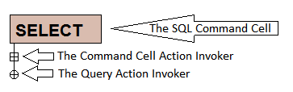
This is the initial state of the query, it has a "Cell" (the brown thingie) which says "SELECT" in it, a rectangular "hot-spot" and a circular "hot-spot" (they are called action invoker in the image above). These two are clickable by the user, clicking them invokes specific actions on the component they are refering to. The rectangular hot-spot (Command Cell Action Invoker) always refers the Command Cell which precedes it (in this very simple case the SELECT command cell) and the circular hot-spot always refers the entire query.
Since a single SELECT statement does not make a very good query in itself, let's click the circular action invoker:
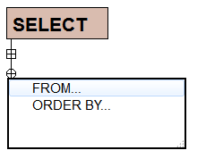
So, a menu appeared with two options, easily recognizeable as being SQL keywords. I want to expand my query with a FROM keyword, so let's click the FROM.
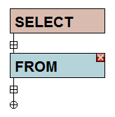
As expected the query was expanded with another command cell, the FROM command cell. Also, please note the small red close button which hints that this command cell can be removed from the query. And also note a new rectangular action invoker below the FROM. Now you already know, that this will invoke actions relative to the FROM part of the SQL query we are building. Let's invoke it:
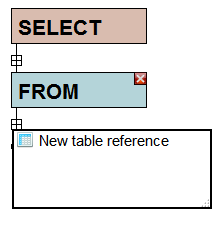
A new menu appeared, which tells you "New table reference" with the meaning that you can add a new table to the FROM section of the query. If there are no tables in your project, you won't be able to click the action invoker. Let's click it and see what happens:
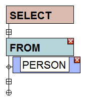
Now the query has a table component. Also, please note a diamond shaped action invoker in front of the "PERSON" table component. Click it will give you options related to this specific element (clicking the rectangular action invoker below the person still refers to the FROM component).
It is time that we actually tell the query builder what to SELECT ... so let's click on the rectangular action invoker below the SELECT cell:
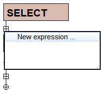
The new menu allwos you to insert a new SELECT expression in the query, so let's click it:
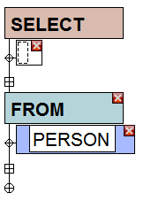
So, just as you have thought, now you have an empty SELECT expression. Please note the area with the dashed line inside the component (which with lots of imagination was named a "cursor"), that area is where you can click and add new elements to the expression, such as columns from the tables that are in the FROM section of the query, or mathematical operators or function calls (DDM 01.f has coverage of almost all mysql functions except some control flow functions, but for next release they are planned too). So let's click on the "cursor":
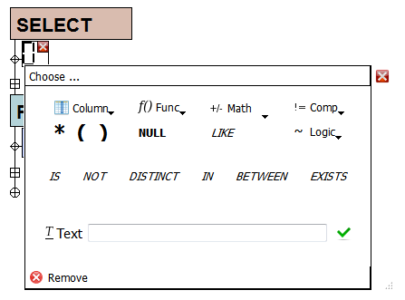
The Expression builder window
A whole new window of possibilities is shown, let's take them step by step:
Column
This allows you to select from the column(s) of the table(s) that are in the FROM section of the query. Note: This does not contain the columns from the tables you have in the project, but just from the FROM section of the query!!! So:
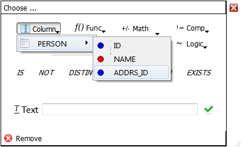
Func
This contains the available functions ofthe currently selected database (right now ... MySQL).
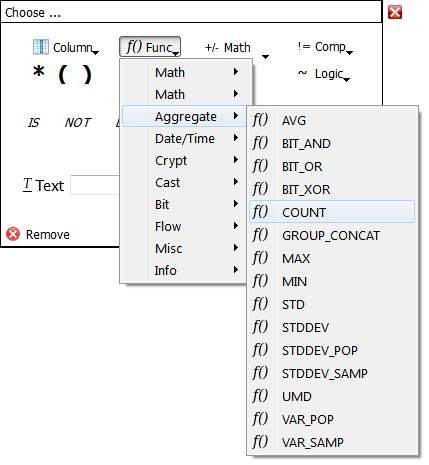
Math
Here you can select various mathematical operators to embed in the expression:
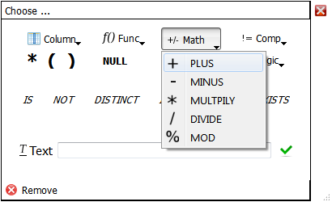
Comp
This is the home of the comparison operators:
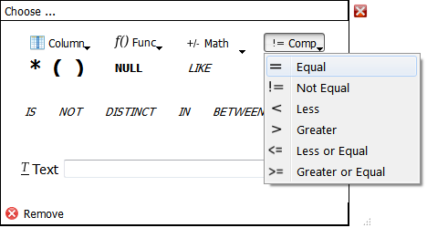
Logic
This is where the logical operators reside:
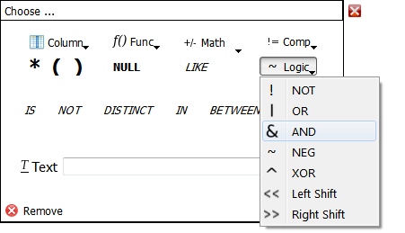
*
Is the classical * operator (meaning everything) from the SQL queries
( and )
They are just regular parantheses if you will ever need them
NULL
This is the NULL value.
LIKE
IS
NOT
DISTINCT
IN
BETWEEN
EXISTS
Just a few of the SQL keywords for easy access.
Text
In this textfield you can enter free text.
Clicking the Remove button will remove the currently present element from the query.
Continuing building the query
So, we are back to the query builder, let's select the name of the person from the columns:
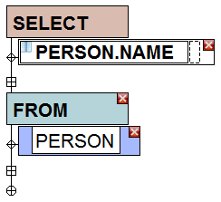
So, the query was updated with a new component, namely the column PERSON.NAME. So, right now you should have an SQL query like:
SELECT
PERSON.NAME
FROM
PERSON
This introduction should start you right away for using the query builder, feel free to experiment with it.
Limitations
Due to the complexity of some keywords the following constructs are not supported for the query builder:
- No support for the CASE function (impactst MySql and CUBRID)
- the POSITION function is not supported (CUBRID)
- the DENSE_RANK, LAG, LEAD, NTILE, RANK, ROW_NUMBER not supported in the query builder due to the complexity of implementation (CUBRID)
Beta
The query builder right now is still in alpha stage sinceit allows you to create invalid SQL queries, however we are working hard on fixing these issues. Please contact us if you feel you have discovered a bug or you have some suggestion.